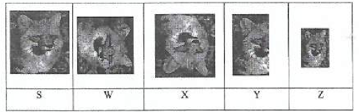

COMPUTER APPLICATIONS 1 (THEORY)
Exam Code: 2920/1024
Duration: 2 hours
Period: November 2021
Outline three features of a graphical user interface in operating systems. Icons: GUI uses small graphical symbols called icons to represent applications, files, commands, and other system features, allowing users to interact with the system visually. Windows: GUI organizes applications and documents into distinct rectangular areas called windows, enabling users to manage multiple tasks and applications simultaneously on the screen. Menus: GUI provides dropdown or pull-down menus that list commands and options, making it easier for users to navigate and execute actions within applications and the operating system. Describe each of the following types of operating system: (i) distributed operating system; (ii) multiprocessing operating system. (i) Distributed Operating System: A distributed operating system manages a group of independent computers and makes them appear to the user as a single, coherent system. These systems are networked together and share resources to perform tasks collectively. Key features include resource sharing, high availability and fault tolerance, and increased performance through parallel processing. They are complex to design and manage but are highly scalable and robust, suitable for large-scale applications and environments. (ii) Multiprocessing Operating System: A multiprocessing operating system supports the execution of multiple processes simultaneously by utilizing two or more CPUs within a single computer system. This type of OS improves processing speed and system throughput by dividing computational tasks among multiple processors. It allows true parallel processing, reducing the time needed to complete tasks. Multiprocessing systems are essential for applications requiring high computational power, such as scientific simulations, video editing, and database servers. Alice intends to create a document using a word processing program. Outline four types of computer keyboard keys she is likely to use during this process. Alphanumeric Keys: These keys include letters (A-Z), numbers (0-9), and symbols (!@#$%^&*()_+ etc.). Alice will use these keys extensively for typing the main content of her document, including text, numbers, and punctuation. Navigation Keys: These keys include arrow keys (up, down, left, right), Home, End, Page Up, and Page Down. Alice will use navigation keys to move the cursor around the document for editing, reviewing, and formatting the text efficiently. Modifier Keys: These keys include Shift, Ctrl, Alt, and Caps Lock. Alice will use modifier keys in combination with other keys to perform actions such as capitalizing letters (Shift + letter), executing shortcuts (Ctrl + S for save), and accessing alternate characters. Function Keys: These keys (F1, F2, F3, ..., F12) are located at the top of the keyboard and are used to perform specific functions depending on the application. Alice might use function keys for shortcuts like saving (F12 - Save As), help (F1), or other program-specific commands in her word processing program. Joab created slides using a presentation program. Outline four ways he could view the slides. Normal View: This is the primary view for creating and editing slides. It displays one slide at a time in the center, with thumbnails of all slides on the left for easy navigation. It allows users to add content, format text, and insert objects on individual slides. Slide Sorter View: This view displays thumbnails of all slides in the presentation in a grid arrangement. It is useful for getting an overview of the entire presentation, rearranging slide order, and adding transitions or timings to multiple slides at once. Notes Page View: This view shows a single slide at the top of the page and a notes section below it. It is used to add and review speaker notes for each slide, which are helpful during presentations but not visible to the audience on the screen. Slide Show View: This view presents the slides in a full-screen display, as they would appear to an audience during a presentation. It is used to preview the presentation flow, animations, transitions, and overall visual impact without the editing interface. State six functions of an operating system software in a computer system Process Management: The OS manages processes by allocating system resources, scheduling tasks for execution, and ensuring efficient multitasking. Memory Management: The OS controls and coordinates the use of main memory, allocating memory space to programs and ensuring efficient memory utilization. File Management: The OS organizes and manages files and directories, providing functionalities for file storage, retrieval, and manipulation. Device Management: The OS controls and communicates with hardware devices such as printers, keyboards, and storage devices through device drivers. User Interface: The OS provides an interface (GUI or command-line) that allows users to interact with the computer system and execute commands. Security and Protection: The OS implements security measures to protect the system and user data from unauthorized access and malware threats. Explain the function of each of the following data types as used in a database table. (1) OLE object; (ii) Hyperlink. (i) OLE Object: The OLE (Object Linking and Embedding) Object data type allows you to embed or link objects from other applications into a database table. It is used to store complex data types like documents, spreadsheets, images, audio, and video files directly within the database. When an object is embedded, it becomes part of the database file; when linked, the database stores a pointer to the object's file location. OLE objects enhance database capabilities by allowing integration of multimedia and document data. (ii) Hyperlink: The Hyperlink data type is used to store web addresses (URLs), email addresses, or paths to files on a network or local computer. When clicked in a database record, a hyperlink automatically opens the associated web page, email client, or file. This data type is useful for creating links to external resources or related documents directly from within the database, facilitating easy access to connected information and resources. Distinguish between data source and main document as used in word processing programs. Data Source: In mail merge, the data source is a file or database that contains variable information to be inserted into a main document. It typically consists of records organized in rows and columns, where each row represents a record (e.g., a person's details) and each column represents a field (e.g., name, address, etc.). Common data sources include spreadsheet files, database tables, or address books. The data source provides the specific, unique information that will be personalized in each copy of the main document. Main Document: The main document is the template file in a mail merge process that contains the static text and formatting that remains the same in all output documents. It includes placeholders, known as merge fields, which are inserted at locations where variable data from the data source should be placed. The main document is created in a word processor and serves as the base structure for generating personalized documents when combined with the data source. It defines the layout and constant content of the final documents. Key Differences: The data source holds the variable data that changes for each output document, while the main document is the static template. The data source provides the information to be inserted, and the main document specifies where and how to insert it. Together, they enable the creation of personalized documents in a mail merge process. Susan used master slides in a presentation she created. Outline four kinds of master slide she could have used. Slide Master: This is the main master slide that controls the overall design and default formatting for all slides in the presentation. Changes made to the slide master affect all slide types (title, content, section header, etc.) unless overridden by specific layout masters. Title Master: This layout master controls the formatting and placeholders specifically for title slides. It defines the appearance of slide titles, subtitles, and any default elements on title slides. It is a type of layout master customized for title slide layouts. Handout Master: This master controls the layout and elements that appear on printed handouts of the presentation. It determines how slides are arranged on handout pages, including headers, footers, and slide thumbnails per page. Notes Master: This master controls the layout of printed notes pages, defining the position and formatting of slides and speaker notes when printed. It allows customization of headers, footers, and the arrangement of slide images and note areas on notes pages. Karaha Ltd intends to connect its computers to the Internet. Outline three types of Internet services they would get from this connectivity World Wide Web (WWW) Access: Internet connectivity enables access to the World Wide Web, allowing Karaha Ltd to browse websites, access online information, and utilize web-based applications for business operations and research. Email Communication: Internet access provides email services, enabling Karaha Ltd to send and receive electronic messages for internal and external communication, facilitating business correspondence and collaboration. File Transfer Protocol (FTP): Internet connectivity supports FTP, allowing Karaha Ltd to transfer files between computers and servers. This is useful for sharing documents, software, and data across the network and with external partners. Distinguish between a macro and a module as used in databases. Macro: A macro in a database is a tool that allows users to automate a series of tasks or operations without writing code. It is created using a visual interface where users select actions from a predefined list and arrange them in a sequence. Macros are primarily used for simple automation tasks like opening forms, running reports, or performing data validation. They are event-driven and can be attached to database objects like buttons or form events. Module: A module in a database is a collection of VBA (Visual Basic for Applications) code that is written to perform more complex and custom database operations. Modules provide a programming environment for creating procedures, functions, and classes to extend database functionality beyond what macros can achieve. Modules are used for tasks such as complex data manipulation, custom error handling, and integration with external applications. They offer greater flexibility and control but require programming knowledge. Key Differences: Macros are created using a visual interface for simple automation, while modules are written in VBA code for complex tasks. Macros are easier to create and use for basic automation, whereas modules offer more power and flexibility for advanced database programming. Modules require programming skills, but macros do not. Figure 1 shows the errors generated when a wrong formula is entered in cell C1 and cell C2 in a worksheet. Write the formula that may have been entered in the cells to generate the errors in cell C1 and C2. Formula for cell C1 to generate #NULL! error: The #NULL! error occurs when you specify an intersection of two ranges that do not actually intersect. In this case, assuming the intention was to multiply A1 and B1 (or A1 and A2, etc.), but instead, 'C1' was mistakenly entered as the second cell reference, resulting in a space-separated range "A1 C1" which is interpreted as an intersection. Since there is no intersection between cell A1 and cell C1 in a typical contiguous range scenario, the #NULL! error is produced. Formula for cell C2 to generate #NAME? error: The #NAME? error appears when Microsoft Excel does not recognize text in a formula. This commonly happens when there is a misspelling in a function name. In this case, "AVERAGEE" is likely a misspelling of the correct function name "AVERAGE". Excel interprets "AVERAGEE" as an undefined name, thus returning the #NAME? error. Marion has been tasked to design wedding cards for her friend using a desktop publication application. Outline four types of layout guides that she could use while designing the cards. Margin Guides: Margin guides define the boundaries of the printable area on the card. They help Marion keep text and graphics within the safe print zone and ensure that content is not cut off during printing. Margin guides create a visual frame for the design. Column Guides: Column guides are vertical lines that divide the card layout into columns. Marion can use column guides to structure text and elements into columns, creating a balanced and organized design, especially useful if the card has multiple sections of text or images. Ruler Guides: Ruler guides are horizontal and vertical lines that Marion can drag from the rulers onto the page. These guides are used for precise alignment of text boxes, images, and other elements on the card. They help in positioning elements accurately and consistently across the design. Grid Guides: Grid guides create a network of horizontal and vertical lines across the card. They form a grid system that helps in maintaining consistent spacing and alignment throughout the design. Grid guides are particularly useful for complex layouts and ensuring visual harmony and proportion in the wedding card design. With the aid of two examples, explain the term transition as used in presentation programs. Transition in presentation programs refers to the visual effects applied when moving from one slide to the next during a slide show. Transitions add visual interest and smoothness to the presentation flow, making it more engaging for the audience. They control how a slide enters and replaces the previous slide on the screen. Example 1: Fade Transition In a fade transition, the current slide gradually fades out while the next slide simultaneously fades in. This creates a smooth and gentle shift between slides, making the transition subtle and professional, suitable for presentations where a seamless flow is desired. Example 2: Wipe Transition In a wipe transition, the new slide progressively covers the previous slide in a sweeping motion, like wiping a screen clean. This type of transition is more dynamic and noticeable than a fade, often used to indicate a clear change of topic or to add a bit of visual flair to the slide progression. Julie intends to add a table in a database she created. Outline four ways she could achieve this. Create Table in Datasheet View: Julie can open the database and, in the "Create" tab on the Ribbon, select "Table" in the "Tables" group. This opens a new table in Datasheet View, allowing her to directly enter column headings (field names) and start inputting data rows. Access automatically assigns default data types, which can be modified later. Create Table in Design View: In the "Create" tab, Julie can select "Table Design". This opens a new table in Design View, where she can define each field's name, data type, and properties before entering any data. Design View provides more control over table structure and is suitable for setting up tables with specific field requirements and validation rules. Import Table from External Data Source: Julie can import a table from an external data source such as Excel, another database, or a text file. In the "External Data" tab, she can choose the data source type and follow the import wizard to bring in data as a new table, specifying import options and table structure as needed. Create Table using a Table Template: In some database programs, pre-designed table templates are available. Julie can explore available templates (if offered by her database software) and choose one that fits her needs, such as a template for contacts, products, or tasks. Templates provide a quick starting point with predefined fields and structures that can be customized. Figure 2 is a spreadsheet extract. Use it to answer the questions that follow. (i) Weighted score in cell D3: (ii) Average weighted score in cell D5. (i) Formula for Weighted score in cell D3: This formula multiplies the Weight of Operating system (cell B3) by its Score (cell C3) to calculate the weighted score for Operating system. The result is then placed in cell D3. (ii) Formula for Average weighted score in cell D5: This formula uses the AVERAGE function to calculate the average of the weighted scores in the range D2 to D4, which includes the weighted scores for Mathematics, Operating system, and ICT and Ethics. The average weighted score is then displayed in cell D5. An organization has noted that the security of their data in the database is compromised. Explain two types of threats that the database could have been exposed to. Data Theft: Data theft refers to the unauthorized extraction or copying of sensitive data from the database. This can be carried out by external attackers who breach the database security or by internal employees with malicious intent. Stolen data can include confidential customer information, financial records, trade secrets, or intellectual property, leading to financial loss, reputational damage, and legal liabilities for the organization. Malware Attack: A malware attack involves the introduction of malicious software into the database system. This can include viruses, worms, ransomware, or spyware. Malware can compromise data integrity by corrupting or deleting data, disrupt database operations, or create backdoors for unauthorized access. Ransomware, a type of malware, can encrypt the database and demand a ransom for data recovery, causing significant operational downtime and potential data loss. State six effects that could be applied to the shapes created in a slide of a presentation program. Fill Effects: Applying different fill colors, gradients, textures, or patterns to the shapes to change their appearance and visual style. Outline Effects: Modifying the shape outline by changing its color, weight, style (solid, dashed, etc.), and adding outline effects like shadows or glows. Shadow Effects: Adding shadows to shapes to create depth and dimension, making them appear to float above or recede into the slide background. Reflection Effects: Applying reflection effects to create a mirrored image of the shape, adding a polished or stylized look. Glow Effects: Adding a soft, colored glow around the shape edges to make them stand out and create a luminous effect. 3D Effects: Applying 3D rotation, beveling, and depth effects to shapes to transform them into three-dimensional objects. Distinguish between tracking and leading as used in desktop publishing applications. Tracking: Tracking, also known as character spacing, refers to the uniform adjustment of space between characters across a range of text. It affects the overall density and tightness of text blocks. Increasing tracking widens the space between all characters evenly, making the text appear more spread out. Decreasing tracking reduces the space, making the text appear tighter. Tracking is used to adjust the visual density of text, improve readability at different sizes, and fit text into specific layout areas. Leading: Leading (pronounced "ledding") is the vertical space between lines of text, measured from baseline to baseline. It controls the vertical distance between lines in a paragraph or text block. Increasing leading adds more vertical space, making the text appear more airy and easier to read. Decreasing leading reduces vertical space, making the lines closer together. Leading is crucial for readability and visual appeal of text blocks, especially in longer paragraphs and body text. Key Differences: Tracking adjusts horizontal space between characters, affecting text density, while leading adjusts vertical space between lines, affecting line spacing and readability. Tracking is about character spacing within a line, and leading is about line spacing vertically. They both contribute to the overall typography and legibility of text in desktop publishing. Joan entered the number 13000.8779 In cell A1 of a worksheet in a spreadsheet. Write a formula that would be used to round the number: (i) to the nearest integer; (ii) as a multiple of 5. (i) Formula to round to the nearest integer: This formula uses the ROUND function to round the value in cell A1 to the nearest integer. The '0' as the second argument specifies that the number should be rounded to zero decimal places, which effectively rounds to the nearest whole number. For 13000.8779, this formula will return 13001. (ii) Formula to round as a multiple of 5: This formula uses the MROUND function to round the number in cell A1 to the nearest multiple of 5. The '5' as the second argument specifies the multiple to which the number should be rounded. For 13000.8779, this formula will return 13000 because 13000 is the nearest multiple of 5 to 13000.8779. Ruth inserted a picture labelled S in a publication she designed as shown in Figure 3. She applied different transformations to achieve the results labelled W, X, Y and Z.  State the type of transformations she applied in each case. W: Rotation. Image W appears to be the original image S rotated by 90 degrees clockwise or counter-clockwise. The orientation of the picture has changed, but it is not mirrored or scaled differently in any significant way other than rotation. X: Flip Horizontal. Image X is a horizontally flipped (mirrored) version of the original image S. The left and right sides of the image have been reversed, creating a mirror image effect across a vertical axis. Y: Flip Vertical. Image Y is a vertically flipped version of the original image S. The top and bottom parts of the image have been reversed, creating a mirror image effect across a horizontal axis. Z: Scale/Resize. Image Z is a scaled-down version of the original image S. The dimensions of the image have been reduced, making it smaller in size compared to S, W, X, and Y. It maintains the same aspect ratio but is shown at a reduced scale. Outline three ways that could be used to align text in a paragraph while designing a brochure in a desktop publishing application. Left Alignment: Left alignment aligns text to the left margin, creating a straight left edge and a ragged right edge. This is commonly used for body text in brochures for readability and a natural reading flow. Center Alignment: Center alignment centers each line of text within the paragraph, creating ragged left and right edges. This is often used for headings, titles, or short lines of text in brochures to create a balanced and symmetrical appearance. Justified Alignment: Justified alignment aligns text to both the left and right margins, creating straight edges on both sides. This is used to create a clean, block-like appearance, often seen in columns of text in brochures for a formal and structured layout. Explain the circumstance that would necessitate the use of each of the following operators when querying a database. (1) AND: (ii) OR. (i) AND Operator: The AND operator is used in database queries when you need to retrieve records that meet multiple criteria simultaneously. It narrows down the search results by requiring that all specified conditions must be true for a record to be included in the result set. For example, if you want to find all customers who live in 'Nairobi' AND have made purchases in '2023', you would use the AND operator to combine these two conditions. Only records satisfying both conditions will be returned. (ii) OR Operator: The OR operator is used in database queries when you need to retrieve records that meet at least one of several specified criteria. It broadens the search results by including records that satisfy any of the given conditions. For instance, if you want to find all employees who work in the 'Sales' department OR have a salary greater than 50000, you would use the OR operator to combine these conditions. Records meeting either the first condition, the second condition, or both will be included in the query result. Sam intends to view a report created using a database program before printing. Explain two ways he could use to achieve this. Print Preview: Most database programs offer a "Print Preview" option. By selecting this option, Sam can view the report on screen exactly as it will appear when printed. Print preview allows him to check the layout, formatting, page breaks, margins, and overall appearance of the report before actually printing it. This helps identify and correct any layout issues or errors, saving paper and ensuring the printed report meets expectations. Report View: Database programs typically have a "Report View" mode, which displays the report in a format optimized for on-screen viewing, closely resembling the final printed output. In Report View, Sam can navigate through pages, review data presentation, and check calculations or summaries within the report. While it may not be an exact pixel-perfect representation of the print, it provides a good visual check of the report's content and structure, allowing for necessary adjustments before printing. Peter intends to print slides created using a presentation program. Outline four options he could use to print the slides. Print Full Slides: Peter can choose to print each slide as a full-page image. This option prints one slide per page, maximizing the visual size of each slide on paper, suitable for detailed slides where visual clarity is essential. Print Handouts: Peter can print handouts with multiple slides per page (e.g., 2, 3, 4, 6, or 9 slides per page). This layout is useful for providing audience members with a compact, paper-saving version of the presentation for reference, often with options to include lines for note-taking. Print Notes Pages: Peter can print notes pages, which include a slide image at the top of the page and the corresponding speaker notes below. This is beneficial for the presenter to have a printed copy of their slides along with their speaking notes for each slide. Print Outline: Peter can print just the outline of the presentation. This option prints the text content of the slides, including slide titles and main points, in an outline format, without the graphical elements. It's useful for reviewing the text-based content and structure of the presentation.1. (a) (3 marks)
Answer
1. (b) (4 marks)
Answer
1. (c) (4 marks)
Answer
1. (d) (4 marks)
Answer
2. (a) (3 marks)
Answer
2. (b) (4 marks)
Answer
2. (c) (4 marks)
Answer
2. (d) (4 marks)
Answer
3. (a) (3 marks)
Answer
3. (b) (4 marks)
Answer
3. (c) (4 marks)
Answer
=A1 C1=AVERAGEE(A2:B2)3. (d) (4 marks)
Answer
4. (a) (3 marks)
Answer
4. (b) (4 marks)
Answer
4. (c) (4 marks)
Answer
=B3*C3=AVERAGE(D2:D4)4. (d) (4 marks)
Answer
5. (a) (3 marks)
Answer
5. (b) (4 marks)
Answer
5. (c) (4 marks)
Answer
=ROUND(A1, 0)=MROUND(A1, 5)5. (d) (4 marks)
Answer
6. (a) (3 marks)
Answer
6. (b) (4 marks)
Answer
6. (c) (4 marks)
Answer
6. (d) (4 marks)
Answer